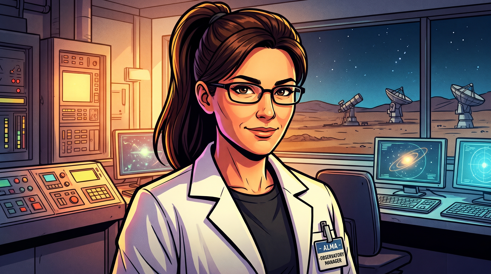

IDENTIFICAZIONE RICERCATORE
Inserisci le tue credenziali per accedere al database astronomico.
Inserisci le tue credenziali per accedere al database astronomico.

Decifra quale modello geometrico governa ciascun sistema.
1. Imposta la Linea del Gelo a 4 UA. 2. Seleziona un protopianeta dal roster a destra. 3. Clicca sull'orbita desiderata per lanciarlo. Attenzione all'evaporazione!
95% Silicati, 5% Gas
Densità: 5.5 g/cm³
70% Roccia, 30% Ghiaccio/Gas
Densità: 3.2 g/cm³
10% Nucleo Roccioso, 90% Idrogeno/Elio
Densità: 1.1 g/cm³
20% Roccia, 80% Ghiacci/Metano
Densità: 1.6 g/cm³
ALMA Exoplanet Archive
Pre-print Submission | Not Peer Reviewed
Paper ID: KPLR-X-001
Autore IA: Sistema Diagnostico Core
Abstract.
Il presente manoscritto raccoglie le osservazioni preliminari generate automaticamente dalle sonde orbitanti sul sistema esoplanetario Kepler-X. L'intelligenza artificiale di bordo ha sintetizzato 8 tesi cardine riguardanti la densità planetaria, l'evoluzione termodinamica della nebulosa solare e l'architettura geometrica del sistema, mettendole in relazione con i modelli storici di Tolomeo, Copernico e Brahe.
ATTENZIONE REVISORE: Si sospetta un alto tasso di allucinazioni fisiche e ottiche da parte dell'IA. Vidimare ogni singola tesi prima dell'autorizzazione alla pubblicazione.